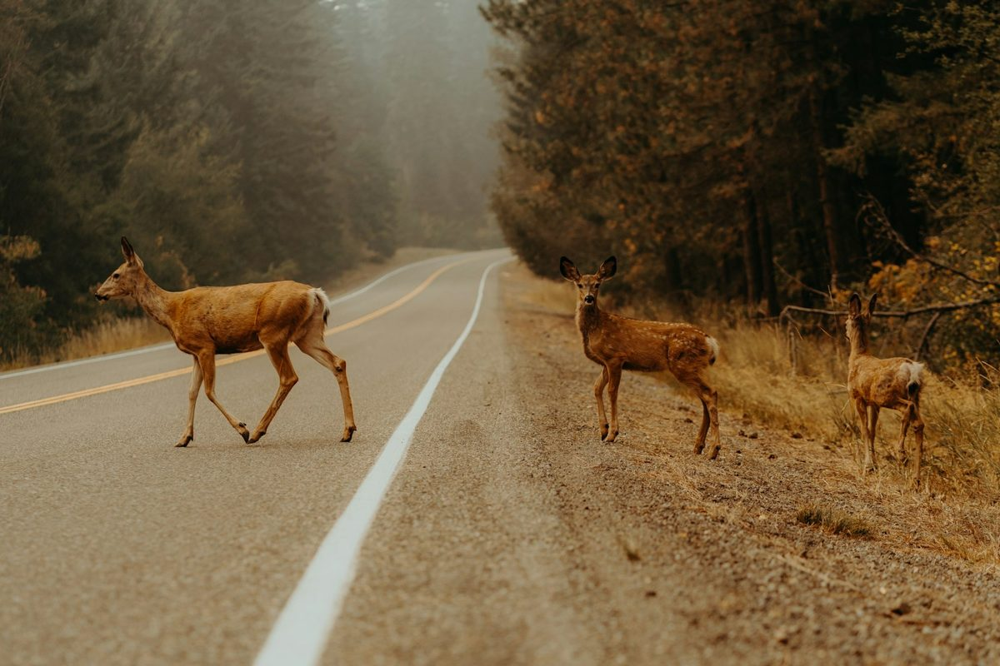

Fall Is Deer Season on the Road
Daylight saving time ends this Sunday, November 1, and the clocks fall back an hour. For many Mobile-area drivers, that moves the evening commute into the dark at the same time deer are most active, around dawn and dusk. A study published in Current Biology in 2022, using more than one million deer-vehicle collisions, reported a roughly 16 percent jump in these crashes in the week after the clocks change, and news coverage of the study noted that collisions were far more likely shortly after dark.
Alabama's own numbers point the same way. The Alabama Law Enforcement Agency (ALEA) reported that its Troopers investigated 1,652 vehicle-versus-wildlife crashes in 2024. Of those, 1,243 happened in the fall and winter months, compared with 409 in spring and summer, and crashes peaked in the winter rut season, with January and December the busiest months. Those figures count only crashes ALEA investigated, so the true total is higher.
This article is educational. It is meant to help you protect yourself on the road and know what to watch for if a collision does happen.
If a Deer Is in the Road
ALEA's guidance is to be especially cautious at dawn and dusk, slow down where you see deer crossing signs, and, if a collision appears unavoidable, to brake firmly and stay in your lane. Swerving can lead to more severe crashes or rollovers. Wearing your seat belt matters more than any other single step.
Why Symptoms Can Appear Late
After any collision, the body releases adrenaline, which can hide pain for hours. Many people get out of the car, look at the damage, and feel fine. Then the neck stiffens overnight, a headache starts the next day, or low back pain shows up a few days later. This delayed pattern is common after vehicle collisions, and it is why "I feel fine" at the roadside does not always tell the whole story. You can read more in our article on why whiplash symptoms are often delayed.
A deer collision is not different in this respect. The sudden stop or impact moves your head faster than your body can control it, whatever the speed, and the structures of the neck, the ligaments, muscles, discs, and joints, can be strained in the process.
Worth knowing: Injury does not require a high-speed crash or a destroyed vehicle. A modest impact can still strain the neck, and a bump of the head can cause a concussion without any visible mark.
Symptoms to Watch For
- Neck pain or stiffness, especially pain that builds over the first day or two
- Headaches, including headaches that start at the base of the skull
- Pain between the shoulder blades or in the low back
- Dizziness, trouble concentrating, or a "foggy" feeling
- Sensitivity to light or noise, or unusual fatigue
- Tingling, numbness, or weakness in the arms or hands
- A sense that the neck feels unsteady
Seek urgent medical care first if you have severe pain, weakness, numbness, confusion, repeated vomiting, trouble walking, a loss of consciousness, or loss of bladder or bowel control.
What to Do in the First Days
- Get to safety. Pull off the road if you can, turn on your hazard lights, and call 911 if anyone is hurt or the vehicle is a hazard to traffic. Stay away from an injured deer.
- Report the collision. A report documents what happened, and many insurers ask for one.
- Take photos. Photograph the vehicle, the scene, and any visible injuries.
- Notice how you feel over the next several days. Write down new symptoms and when they started.
- Get evaluated. Even mild symptoms are worth checking, because a documented early evaluation gives you a baseline and helps guide care.
- Review your insurance. Coverage for animal collisions and medical payments varies by policy, so ask your insurer what applies to you.
What an Evaluation Looks Like
At Dr. Moore's office, an evaluation starts with a detailed history of the collision and your symptoms, followed by a neurological and spinal examination. Imaging is used only when the findings justify it. When symptoms persist or an MRI does not explain them, motion studies may be considered, as discussed in our article on neck instability and a normal MRI. Findings are always interpreted together with your history and examination, and no particular outcome can be guaranteed.
Where Dr. Moore's Training Fits
Dr. Moore is a Fellow in Primary Spine Care (FPSC) and has completed radiology mini-fellowships through SUNY Jacobs in neuroradiology, advanced MRI of the spine, and musculoskeletal radiology. His practice focuses on spinal trauma. You can read more on the About page and the whiplash and trauma page.
Hurt in a collision? Call or text Dr. Moore directly at (251) 281-8768, any time of day. For emergencies, call 911.
Common Questions
Should I get checked if I hit a deer and feel fine?
Many people feel fine right after a collision because adrenaline masks pain, and neck, back, and head symptoms can appear hours or days later. If you were jolted, had airbags deploy, or notice any new symptoms, an evaluation is reasonable even when you feel okay. Seek emergency care first for severe pain, weakness, numbness, confusion, repeated vomiting, or loss of consciousness.
Is it better to swerve or brake when a deer is in the road?
The Alabama Law Enforcement Agency advises that if a collision appears unavoidable, you brake firmly and stay in your lane, because swerving can lead to more severe crashes or rollovers.
Can a low-speed deer collision still injure my neck?
Yes. Injury does not require a high-speed crash. Sudden braking, impact, or a secondary collision can strain the soft tissues of the neck and back, and a head strike can cause a concussion even without visible damage.
Should I call the police after hitting a deer?
Generally yes. A report documents the collision, and many insurers ask for one. Move to a safe place if you can, turn on your hazard lights, and call 911 if anyone is hurt or the vehicle is blocking traffic.
References
Alabama Law Enforcement Agency. ALEA: Deer Movement Increases Statewide (FOX10 News, November 16, 2025).
Deer-vehicle collisions rise when daylight saving time ends: study (FOX 5 DC, reporting on research published in Current Biology, November 2022).